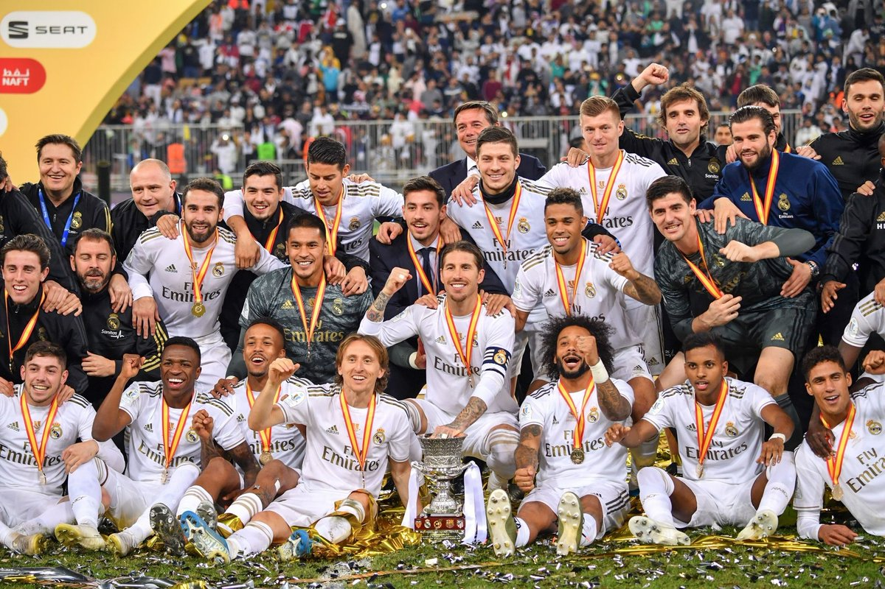

Реал Мадри́д
История
В 1896 году был создан клуб «Футбол Скай», ставший прародителем мадридского клуба. Но официальной датой основания считается 6 марта 1902 года, когда братья Падрос и Хулиан Паласиосы открывают клуб под названием Madrid Football Club. 29 июня 1920 года король Испании Альфонс XIII присвоил клубу титул Королевский, что по-испански звучит как Real. Отсюда современное название клуба — Real Madrid. С момента основания клуб стал претендовать на лидерство в испанском футболе: уже в 1903 году он вышел в финал Кубка страны, где уступил «Атлетику» из Бильбао. Через несколько лет почётный трофей надолго «переехал» в столицу: «Мадрид» завоёвывал Кубок Испании четыре раза подряд. Чемпионаты Испании стали проводиться только с сезона 1928/29, а до того клубы определяли сильнейших по регионам. «Мадрид» (с 1920 года — «Реал Мадрид») за это время первенствовал в столичном округе 16 раз
.Расцвет
К середине 50-х годов прошлого столетия, когда в Европе решили создать континентальную федерацию футбола, которая наладила бы регулярное проведение соревнований как клубных, так и национальных команд, мадридский «Реал» не являлся главным авторитетом в Испании. Однако именно «Реал» выиграл первенство 1954/55, благодаря чему стал первым испанским делегатом в Кубке европейских чемпионов. С того момента «Реал» утвердился на европейской вершине на пять лет. Успехам на международной арене сопутствовали и победы во внутреннем чемпионате, каких в период с 1954 по 1969 год было 12. На протяжении полутора десятков лет получалось так, что если мадридцы и уступали дома первенство, то обязательно выигрывали Кубок чемпионов. Таким образом, они постоянно участвовали в самом престижном европейском турнире на протяжении 15 лет подряд, впервые не попав в него лишь в 1970 году. В ту золотую эпоху в «Реале» блистали натурализованный аргентинец Альфредо Ди Стефано (лучший футболист Европы 1957 и 1959 годов), француз Раймон Копа (обладатель «Золотого мяча» 1958 года), венгр Ференц Пушкаш (второй футболист Европы 1960 года), Франсиско Хенто — шестикратный обладатель Кубка чемпионов. В середине 60-х компанию «долгожителю» Хенто составляли Хосе Сантамария, Амансио, Пирри, Мигель Анхель. Постепенно, по мере ухода ветеранов, победные традиции в Европе были утрачены. Следующего взлёта пришлось ждать почти двадцать лет, когда пришло новое поколение во главе с Эмилио Бутрагеньо, ближайшими сподвижниками которого были Мичел, Уго Санчес, Маноло Санчис, Мартин Васкес и Мигель Пардеса. Они выиграли два Кубка УЕФА и пять чемпионатов подряд.
1970-е — 1990-е годы
В середине семидесятых «Реал» отметил разгромную победу над «Барселоной» (4:0) в финале Кубка Испании сезона 1973/1974. В 1978 году «Реал» приобрёл Ули Штилике и Хуанито, которые, несмотря на несхожесть игровой манеры, на долгие годы станут идолами мадридских болельщиков. 4 июня 1980 года мадридцы победили в финале Кубка страны, разгромив «Кастилью» 6:1. На следующий год «Реал» вновь напомнил о себе Европе, выйдя в финал Кубка европейских чемпионов. Однако в яростной схватке с «Ливерпулем» мадридцы, руководимые Вуядином Бошковым, вынуждены были уступить со счётом 0:1. В декабре 1983 года тренером «Реала» стал Альфредо ди Стефано, а команду пополнили Мартин Эскер, Мичел, Санчис и Эмилио Бутрагеньо, который совсем скоро стал одним из символов команды. Уже в первой игре за «королевский» клуб Бутрагеньо отличился дважды и принёс победу мадридцам в матче против «Кадиса». 24 мая 1985 года пост президента занял Рамон Мендоса, чьё правление будет отмечено выдающимися достижениями. В 1985 и 1986 годах мадридцы завоёвывали Кубок УЕФА, обыграв в финальных матчах «Видеотон» и «Кёльн». На своём поле «Реал» выступал особенно вдохновенно: казалось, его игрокам под силу отыграться с любого счёта. Однажды им удалось совершить и вовсе нечто невероятное: проиграв мёнхенгладбахской «Боруссии» со счётом 1:5, мадридцы провели на «Сантьяго Бернабеу» четыре безответных мяча и вышли в следующий раунд. После нескольких относительно неудачных сезонов пост главного тренера «Реала» занял Хорхе Вальдано, до этого плодотворно поработавший в «Тенерифе». Наставник доверил место в основном составе Редондо, Лаудрупу, Амависке, Кике Флоресу. 8 января 1995 года команда Вальдано уничтожила своих главных соперников из «Барселоны», победив в матче чемпионата со счётом 5:0, а впоследствии завоевала чемпионский титул. Однако следующий сезон «Реал» провалил, и место на тренерском мостике в июле 1996 года занял знаменитый итальянец Фабио Капелло. Заметно обновился и состав команды, в которую влились Зеедорф, Миятович и Роберто Карлос. Для победы в чемпионате команде Капелло хватило одного сезона. В мае 1998 года «Реал» в седьмой раз завоёвывает Кубок чемпионов, победив в решающем матче «Ювентус» (1:0), а через несколько месяцев выигрывает и Межконтинентальный кубок у «Васко да Гамы». После неудачного сезона 1998/1999 руководство «Реала» решило доверить пост главного тренера Висенте дель Боске и не прогадало: клуб в восьмой раз выиграл Кубок чемпионов, обыграв «Валенсию» (3:0) в финальном матче. Отлично проявил себя Рауль, ставший настоящим лидером команды. В 2001 году «Реал» в 28-й раз завоевал титул чемпиона страны.